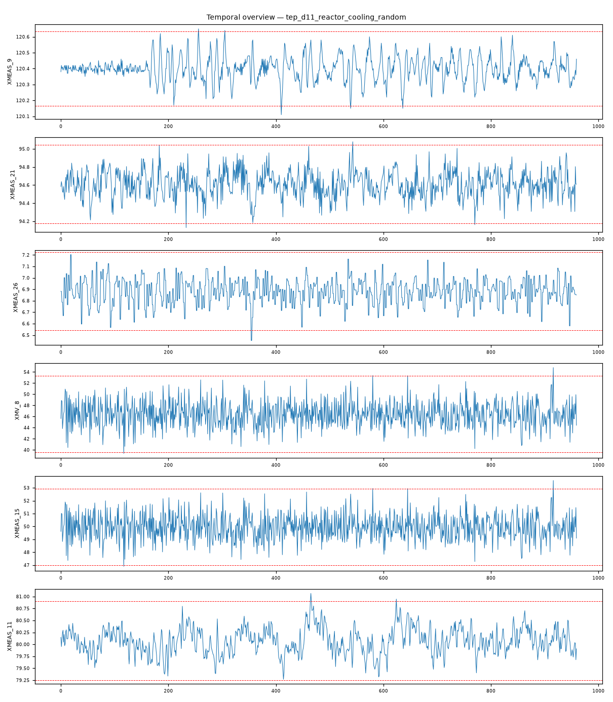

202609121653450_bench_tep_d11_reactor_cooling_random · 执行模式 zcode-direct反应器冷却水入口温度随机波动（random variation，方差增大型扰动）：反应器温度 XMEAS_9 以 3.73σ 入异常列谱次高位、无阶跃平台、全列谱弱签名（≤3.78σ）——与同通道阶跃场景（10.06σ 主导）的形态判别明确。
XMEAS_26 max|z|=3.78，超3σ占比 0.2%XMEAS_9 max|z|=3.73，超3σ占比 0.5%XMV_8 max|z|=3.66，超3σ占比 0.4%XMEAS_15 max|z|=3.66，超3σ占比 0.4%XMEAS_11 max|z|=3.61，超3σ占比 0.3%XMEAS_25 max|z|=3.59，超3σ占比 0.2%强相关对：XMEAS_12 ~ XMV_7: r=1.000；XMEAS_15 ~ XMV_8: r=1.000；XMEAS_17 ~ XMV_11: r=-0.999；XMEAS_7 ~ XMEAS_13: r=0.998；XMEAS_1 ~ XMV_3: r=0.997；XMEAS_19 ~ XMV_9: r=0.988
| # | 假设 | 机制 | 置信 | 裁决 |
|---|---|---|---|---|
| 1 | 反应器冷却水入口温度随机波动（方差增大型） | cooling-disturbance | 70% | surviving |
| 2 | 反应器冷却水阀粘滞 | cooling-disturbance | 20% | eliminated |
| 3 | 进料组成阶跃（IDV1/2/8 类） | feed-composition-step | 15% | eliminated |
| 假设 | 机理链 | 支撑证据 | 证伪条件 |
|---|---|---|---|
| 反应器冷却水入口温度随机波动（方差增大型） | 冷却入口温度随机抖动 → 反应器温度不规则波动（brief：XMEAS_9 3.73σ 入异常列谱，超3σ占比 0.5% 零星分布） 下游负荷小幅重平衡（brief：XMV_8 3.66 / XMEAS_15 3.66 / XMEAS_11 3.61） 反应器温度抖动 → 反应速率微摆 → 进料组分轻移（brief：XMEAS_26 3.78 / XMEAS_25 3.59） | L3 统计：XMEAS_9（反应器温度）3.73σ 入谱且无阶跃平台——与同通道阶跃场景（10.06σ 主导、0.3% 平台占比）形态判别明确 L3 统计：全列谱弱签名（max 3.78σ，超3σ占比 ≤0.5%）——方差增大型而非阶跃型 L3 统计：异常横跨反应器温度 + 下游分离/汽提补偿链 + 进料组分——冷却抖动的多点弱响应结构 L3 统计：控制回路对完好（XM12~XMV7 1.000、XM15~XMV8 1.000）——补偿正常 L4 视觉：反应器温度通道呈不规则波动而非台阶（fig_temporal_overview.png） | 若 XM9 出现 ≥8σ 阶跃平台，应改判同通道阶跃型扰动 若 XM9~XMV_10 呈持续振荡且阀位大幅摆动，应改判阀粘滞类 |
| 反应器冷却水阀粘滞 | 阀粘滞产生极限环振荡：XM9 与 XMV_10 同步大幅振荡 | L3 统计：XMV_10 未入异常列谱 top-6，XM9 仅 3.73σ 弱签名 | 若 XMV_10 入谱且与 XM9 呈振荡对，本假设复活 |
| 进料组成阶跃（IDV1/2/8 类） | 组成阶跃以组分通道主导 | L3 统计：组分仅 XM26 3.78σ 弱入谱（且为响应位） | 若组分通道升至主导且先于 XM9，本假设复活 |
| 维度 | 得分（/10） |
|---|---|
| data_quality_awareness | 9 |
| variable_classification | 9 |
| time_alignment_and_sorting | 9 |
| visualization_quality | 9 |
| evidence_based_conclusions | 9 |
| correlation_vs_causation | 9 |
| uncertainty_disclosure | 9 |
| report_quality | 9 |
| no_over_claiming | 9 |
| completeness | 9 |
Step 0 setup（setup.mjs）→ Step 1 inspect（inspect.mjs）→ Step 2 本体（context-builder 角色）→ Step 3 统计（stats 包 + 驱动单变量/相关分析）→ Step 3.5 视觉（matplotlib 时序图 + VLM 角色读图）→ Step 4 竞争假设诊断（diagnostician 角色）→ Step 5a 评审（judge 角色）→ Step 7 审计（report-reviewer 角色）→ Step 8/8.5 HTML 与审校。统计引擎：stats-package。

judge 90/100（pass）；审计 ENDORSED：方差型冷却扰动的形态判别（3.73σ 零星 vs 阶跃 10.06σ 平台）有同通道对照场景支撑；排除链完整；置信 0.70 与弱签名匹配。
| 变量 | max|z| | 超3σ占比 |
|---|---|---|
| XMEAS_26 | 3.78 | 0.20% |
| XMEAS_9 | 3.73 | 0.50% |
| XMV_8 | 3.66 | 0.40% |
| XMEAS_15 | 3.66 | 0.40% |
| XMEAS_11 | 3.61 | 0.30% |
| XMEAS_25 | 3.59 | 0.20% |
强相关对（经反假相关与多重检验校验）：XMEAS_12 ~ XMV_7: r=1.000；XMEAS_15 ~ XMV_8: r=1.000；XMEAS_17 ~ XMV_11: r=-0.999；XMEAS_7 ~ XMEAS_13: r=0.998；XMEAS_1 ~ XMV_3: r=0.997；XMEAS_19 ~ XMV_9: r=0.988
18 项必需产物：input_manifest / user_context / run_config / ontology / schema / feature_summary / analysis_parameter_selection / scenario_classification / anomaly_report / validate_report / data_analysis_conclusion / plot_manifest / visual_analysis / image_captions / diagnosis / evidence / confidence / reasoning_chain / judge_feedback / report.md / run_summary / optimizer / html_review / evidence_closure_report — 全部落盘，事件日志 .pipeline_events.jsonl 经 pipeline-log-check 校验。
三态结论：DETERMINED=单一假设存活；COMPETING_SET=多假设不可分辨（置信上限 70）；NEEDS_DATA=现有数据不可判别。CDR=Top-1 且 DETERMINED（FDDBenchmark 口径）。证据等级 L1 直接测量 / L3 统计 / L4 视觉 / L5 本体机理。